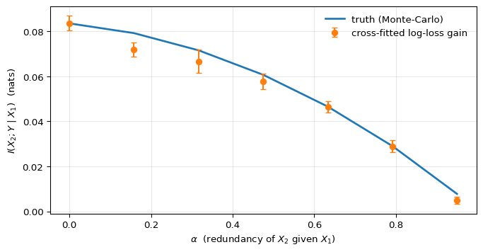

import numpy as np
import matplotlib.pyplot as plt
from scipy.special import expit
from sklearn.ensemble import GradientBoostingClassifier
from sklearn.model_selection import KFold
beta0, beta1, beta2 = -0.3, 1.0, 1.0
LOSS = lambda y, p: -y*np.log(p) - (1-y)*np.log(1-p)
def H_b(p, eps=1e-12):
p = np.clip(p, eps, 1-eps)
return -p*np.log(p) - (1-p)*np.log(1-p)
def make_data(alpha, n, seed):
r = np.random.default_rng(seed)
X1 = r.standard_normal(n)
X2 = alpha*X1 + np.sqrt(1-alpha**2)*r.standard_normal(n)
Y = r.binomial(1, expit(beta0 + beta1*X1 + beta2*X2))
return X1, X2, Y
def truth_cmi(alpha, n_outer=20_000, n_inner=300, seed=0):
"""Closed-form-up-to-MC ground truth I(X2; Y | X1)."""
r = np.random.default_rng(seed)
X1 = r.standard_normal(n_outer)
X2 = alpha*X1 + np.sqrt(1-alpha**2)*r.standard_normal(n_outer)
H_full = H_b(expit(beta0 + beta1*X1 + beta2*X2)).mean()
eta_in = r.standard_normal((n_outer, n_inner))
X2_in = alpha*X1[:, None] + np.sqrt(1-alpha**2)*eta_in
p_marg = expit(beta0 + beta1*X1[:, None] + beta2*X2_in).mean(axis=1)
return H_b(p_marg).mean() - H_full
def cross_fitted_cmi(X1, X2, Y, K=5, seed=0):
"""Plug in @eq-loglossgain with K-fold cross-fitted auxiliaries."""
Xfull = np.column_stack([X1, X2])
fold_means = []
for tr, te in KFold(K, shuffle=True, random_state=seed).split(X1):
m_r = GradientBoostingClassifier(max_depth=3, n_estimators=120,
random_state=seed)
m_f = GradientBoostingClassifier(max_depth=3, n_estimators=120,
random_state=seed)
m_r.fit(X1[tr].reshape(-1,1), Y[tr])
m_f.fit(Xfull[tr], Y[tr])
p_r = np.clip(m_r.predict_proba(X1[te].reshape(-1,1))[:,1], 1e-12, 1-1e-12)
p_f = np.clip(m_f.predict_proba(Xfull[te])[:,1], 1e-12, 1-1e-12)
fold_means.append((LOSS(Y[te], p_r) - LOSS(Y[te], p_f)).mean())
fm = np.array(fold_means)
return fm.mean(), fm.std(ddof=1) / np.sqrt(K)
alphas = np.linspace(0.0, 0.95, 7)
truth = np.array([truth_cmi(a) for a in alphas])
emp, se = zip(*[cross_fitted_cmi(*make_data(a, 8000, seed=int(100*a)+1))
for a in alphas])
emp, se = np.array(emp), np.array(se)Conditional mutual information is just log-loss gain
information-theory
machine-learning
simulation
cmi-framework
Two models, a subtraction, and you’ve estimated an information-theoretic quantity. The identity that makes CMI cheap to compute — and the first post in a short series on the CMI framework.
A previous post used mutual information to detect dependence that correlation couldn’t see. The natural next question is conditional: given that I already know Z, does S carry any further information about Y? In ML terms, this is the feature- or score-evaluation question — does adding this thing to a model that already uses everything else move the needle?
The right object is conditional mutual information:
I(S; Y \mid Z) \;=\; H(Y \mid Z) - H(Y \mid S, Z),
i.e. the reduction in residual uncertainty about Y once we observe S, having already conditioned on Z (Cover & Thomas, 2006). It is non-negative, zero iff S \perp Y \mid Z, and the magnitude measures how much that conditional independence fails. It’s also, in spite of how it looks, almost free to estimate — which is the point of this post.
The identity
When the output variable Y is binary, conditional entropy has a particularly clean form. Writing H_b(p) = -p \log p - (1-p) \log(1-p) for the entropy of a Bernoulli(p),
H(Y \mid X) = \mathbb{E}_X\!\left[H_b\!\left(p(Y=1 \mid X)\right)\right].
That is: average H_b over the marginal distribution of X, evaluated at the conditional probability the data-generating process actually assigns at each X. Conditional entropy in the binary target setup is just the expected coin-flip uncertainty, where the bias of the coin depends on the example.
The same H_b shows up from the model training side. With the per-example log-loss
\ell(y, p) = -y \log p - (1-y) \log(1-p),
a one-line check shows that when a model outputs the true conditional probability p(Y=1 \mid X), its expected loss equals exactly the binary entropy of that probability:
\mathbb{E}\!\left[\ell(Y, p(Y=1 \mid X)) \mid X\right] \;=\; H_b\!\left(p(Y=1 \mid X)\right).
This isn’t a coincidence — cross-entropy is a proper scoring rule, so its expected value is minimized exactly at the truth, and the minimum equals the entropy of the truth. Anything above this floor is a misspecification penalty.
Plug both into the entropy-reduction definition and the result is a clean identity:
I(S; Y \mid Z) \;=\; \mathbb{E}\!\left[\, \ell\!\left(Y, p(Y=1 \mid Z)\right) - \ell\!\left(Y, p(Y=1 \mid S, Z)\right) \,\right]. \tag{1}
Read in English: CMI is the expected drop in log-loss between a model that uses Z alone and a model that uses (S, Z), evaluated at the truth. Every binary classifier you have ever trained already computes the right-hand side on its validation data. Two such classifiers and a subtraction give an information-theoretic estimate.
The catch (cross-fitting in one paragraph)
Equation 1 holds at the true conditionals p(Y=1 \mid Z) and p(Y=1 \mid S, Z). We don’t have those — we have fitted models \hat{p}_0(Z) and \hat{p}_1(S, Z). The trouble is what happens when we evaluate those fitted models’ log-losses on the same data we trained them on.
In-sample log-loss is biased downward. A fitted model has tuned its predictions to match the specific observations it saw, including their noise, so the loss on those observations is systematically lower than the loss the same model would incur on a fresh draw. That bias is not equal across the two models. The full model uses (S, Z) and therefore has strictly more capacity to fit noise than the baseline that uses Z alone, so its in-sample loss is more optimistic. The CMI estimator is the difference of those two losses, and subtracting two downward-biased quantities doesn’t cancel the bias — it preserves the asymmetry, inflating the estimate.
The cleanest way to see this: imagine S carries zero information about Y given Z, so the true CMI is exactly zero. The full model can still fit spurious correlations between S and Y in the training sample; the baseline can’t, because it never sees S. The naive in-sample estimator will report a positive value where the truth is zero. The bias points upward — toward more apparent CMI than there actually is.
The fix is K-fold cross-fitting, which evaluates every loss on data the model hasn’t seen during training:
- Partition the data into K disjoint folds.
- For each fold k: fit \hat{p}_0 and \hat{p}_1 on the data outside fold k, then compute the per-example log-loss difference for every example inside fold k.
- Average those per-example differences across all examples (equivalently, across folds).
Same idea as Chernozhukov et al.’s debiased ML (Chernozhukov et al., 2018) — the auxiliaries are nuisances, and we want their contribution to the downstream estimator to come from out-of-sample predictions only.
Demonstration
The simulation has two jobs. First, give us a setup where the true I(X_2; Y \mid X_1) is computable to arbitrary precision, so there’s a reference curve the estimator can be checked against. Second, sweep through a single parameter that moves the conditional CMI smoothly from its maximum down to exactly zero — so we can see whether the cross-fitted estimator tracks that variation continuously, and whether it correctly hits zero in the limit. A jointly Gaussian setup with one correlation knob serves both jobs cleanly.
Concretely: take X_1, \eta \overset{\text{iid}}{\sim} \mathcal{N}(0, 1), set
X_2 = \alpha X_1 + \sqrt{1 - \alpha^2}\,\eta,
and generate Y \sim \mathrm{Bernoulli}\!\left(\sigma(\beta_0 + \beta_1 X_1 + \beta_2 X_2)\right) with \alpha \in [0, 1). Two facts about this construction matter for the test. The marginal of X_2 is a standard Gaussian for every value of \alpha — only its dependence on X_1 changes. And the conditional X_2 \mid X_1 has variance 1 - \alpha^2, which collapses to zero as \alpha \to 1. In that limit X_2 becomes a deterministic linear function of X_1, so anything X_2 tells us about Y is already implicit in X_1, and I(X_2; Y \mid X_1) must equal zero. At the other end, \alpha = 0, the predictors are independent and X_2 contributes its full conditional information. The estimator’s job is to trace that decay.
Computing the truth is direct. The full conditional p(Y=1 \mid X_1, X_2) = \sigma(\beta_0 + \beta_1 X_1 + \beta_2 X_2) is closed-form, so H(Y \mid X_1, X_2) is one expectation. The marginal p(Y=1 \mid X_1) = \mathbb{E}_{X_2 \mid X_1}\!\left[\sigma(\cdot)\right] has no closed form, so we average \sigma over many draws of X_2 \mid X_1 for each X_1 and plug into H_b. The empirical log-loss-gain estimator uses two gradient-boosted classifiers — one trained on X_1 alone, one on (X_1, X_2) — with 5-fold cross-fitting. If equation 1 is right and cross-fitting is doing its job, the cross-fitted curve should sit on top of the Monte-Carlo curve across the entire range of \alpha.
fig, ax = plt.subplots(figsize=(7, 3.6), constrained_layout=True)
ax.plot(alphas, truth, lw=2, label="truth (Monte-Carlo)")
ax.errorbar(alphas, emp, yerr=se, fmt="o", capsize=3,
label="cross-fitted log-loss gain")
ax.set_xlabel(r"$\alpha$ (redundancy of $X_2$ given $X_1$)")
ax.set_ylabel(r"$I(X_2; Y \mid X_1)$ (nats)")
ax.legend(frameon=False)
ax.grid(alpha=0.3)
plt.show()
Two things to notice in Figure 1. The first is that the estimator works in the only way that matters: it agrees with the truth. At \alpha = 0, the closed-form Monte-Carlo gives I(X_2; Y \mid X_1) \approx 0.084 nats and the cross-fitted log-loss-gain estimator returns the same value to three decimals. The agreement persists across the entire sweep — the cross-fitted points sit within a fold-level standard error of the Monte-Carlo curve everywhere, including the hardest regime where the signal is small. It’s not the magnitude of 0.084 that’s the evidence; it’s that two routes to it — one going through the population entropy gap, one going through finite-sample held-out log-losses — land at the same place.
The second thing is what the curve’s shape implies for metrics that don’t condition. As \alpha grows, the marginal AUC of X_2 against Y in this DGP actually increases (from \approx 0.71 at \alpha = 0 to \approx 0.85 at \alpha = 0.95), because X_2 inherits more of X_1’s predictive content as the two predictors merge. A marginal-AUC screen would therefore rate X_2 as more important at \alpha = 0.95 than at \alpha = 0 — the opposite verdict from CMI, which says X_2’s conditional contribution given X_1 has collapsed to zero. Same X_2, opposite directions. Standalone strength and complementary signal are independent axes, and the conditional form of mutual information is what separates them.
Why this matters
Once equation 1 is in hand, several decisions that look unrelated turn out to be the same calculation with different conditioning sets. Does this score generalize to a different target? — pick Z = Y^{(1)} and read I(S^{(1)}; Y^{(2)} \mid Y^{(1)}). Should I ensemble two models? — pick Z = S^{(2)} and read I(S^{(1)}; Y^{(2)} \mid S^{(2)}). Where in a representation’s interaction hierarchy does signal live? — pick Z = (R, \Phi_{<k}) and read \Delta_k = I(Y; \Phi_k \mid R, \Phi_{<k}). Each is the next post in this series; the machinery is identical.
One-liner
Conditional mutual information \;=\; expected log-loss reduction. Train two models, subtract, cross-fit. The information-theoretic accounting runs on a loss your training pipeline already computes.
References
Chernozhukov, V., Chetverikov, D., Demirer, M., Duflo, E., Hansen, C., Newey, W., & Robins, J. (2018). Double/debiased machine learning for treatment and structural parameters. The Econometrics Journal, 21(1), C1–C68. https://doi.org/10.1111/ectj.12097
Cover, T. M., & Thomas, J. A. (2006). Elements of information theory (2nd ed.). Wiley-Interscience.